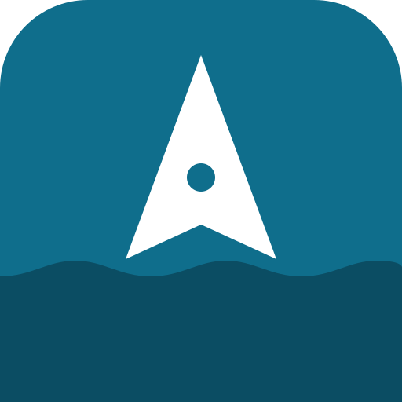

Open on YouTube ↗
Ship Track is a free live map of ships around the world, made by the team behind trainlive.cc.
Positions come from the AIS radio signals ships send, collected by volunteer receivers (aisstream.io) and, in the Baltic, by Finland's Fintraffic. Names and types missing from the signal come from the Global Fishing Watch ship registry. Ferry timetables come from the operators' published open data, and routes are estimated along the main shipping lanes.
Coverage depends on those receivers: ships out of their reach do not appear.
Ship Track is provided free of charge, "as is", for general information only.
We are not responsible for the accuracy, completeness or timeliness of the data. Positions, destinations, arrival times, routes, timetables, photos and ship details come from third parties and from what crews type into their equipment. They can be wrong, late or missing.
We take no responsibility for any decision, loss or damage resulting from the use of this site. Do not use it for navigation, safety at sea, or any purpose where an error could cause harm. Always rely on official sources.
Data and photos remain the property of their owners and are shown under their licences, credited on the map and on each ship card. The service may change or stop at any time without notice.
Ship Track has no accounts, no advertising and no tracking cookies.
Your map view, theme and recently seen ships are kept only in your own browser, so the map opens where you left it. You can clear them at any time by clearing this site's data in your browser.
If you use "locate me", your position and compass direction stay on your device and are never sent to us. To open the map near you, our server uses the country your connection comes from, without storing it.
Webcam videos and pictures load from the webcam’s own site (YouTube, Viewsurf, Vision-Environnement, SkylineWebcams or Les Dunes de Flandre) only when you open one, and that site then receives your IP address.
The map loads data from other services (map tiles, ship photos, and weather when that layer is on), which receive your IP address as for any web page. The weather service also receives the approximate centre of the map.
Questions, corrections or ideas? Write to us at contact@trainlive.cc.
Please note that we can't correct what ships broadcast themselves, such as a wrong destination typed by the crew.